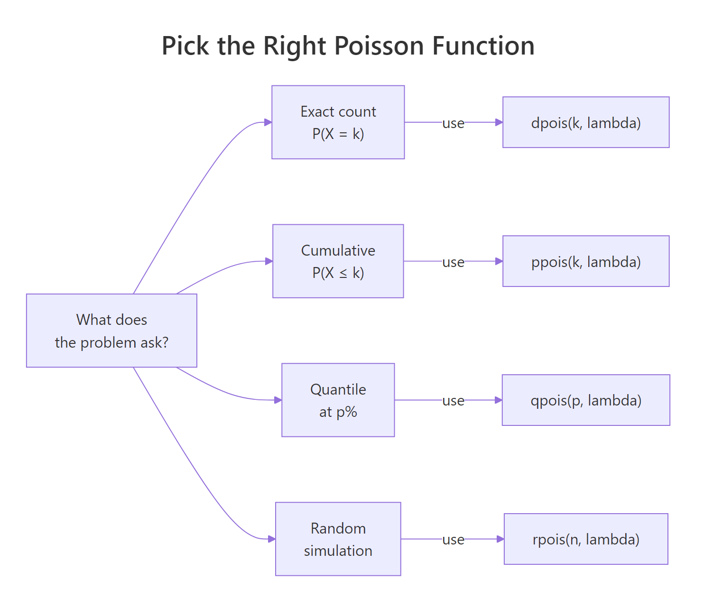

Poisson Distribution Exercises in R: 10 Problems with Solutions
These 10 Poisson distribution exercises in R walk you from dpois() one-liners to poisson.test() inference, with full runnable solutions. Every problem has a scaffold, a hint, and a reveal so you can check your answer the moment you finish coding.
What quick R one-liners solve Poisson problems?
The Poisson distribution answers one question: given an average rate λ of events in a window, how likely is each count? R gives you four functions, dpois(), ppois(), qpois(), rpois(), that cover exact probability, cumulative probability, quantiles, and random samples. Before the 10 problems, a single runnable block shows the two most common cases side by side so you can spot which function fits a new question at a glance.
The first call asks "what is the probability of exactly 3 calls?" and the second asks "what is the probability of 3 or fewer?" Both share the same parameter, lambda = 4 events per hour, and differ only in the function name. That two-function pairing handles most questions you will meet.

Figure 1: The four Poisson functions, pick one by what the question asks for.
d for density/mass, p for cumulative, q for quantile, r for random, works for every distribution in base R (dnorm, pbinom, qexp, rt). Learn it once for Poisson, reuse it forever.Try it: Compute the probability of exactly 2 events when the average rate is λ = 5.
Click to reveal solution
Explanation: dpois(k, lambda) returns P(X = k). With λ = 5 events on average but k = 2 observed, the count falls well below the mean, so the probability is small.
How do you compute exact Poisson probabilities with dpois()?
dpois(k, lambda) returns the probability mass at a single count. The formula under the hood is the classic Poisson PMF:
$$P(X = k) = \frac{\lambda^k e^{-\lambda}}{k!}$$
Where:
- $\lambda$ = the average rate of events per window
- $k$ = the count of events you ask about
- $e$ = Euler's constant, ≈ 2.71828
- $k!$ = k factorial (the number of orderings of k items)
For a single k, one dpois() call is enough. For a range of counts, say "between 3 and 5 emails", pass a vector of k values and sum the result.
The first call gives a direct mass at k = 5. The second passes a vector 3:5 to dpois(), returning three probabilities in one go, which sum() collapses into the total for the range. The answer, about 49%, is the probability that the hour lands anywhere in that 3-to-5-email band.
sum(dpois(a:b, lambda)) is the one-line idiom. It is faster and clearer than a loop, and it beats typing three separate dpois() calls.Try it: A bus arrives at a stop at a rate of 1.5 per 10 minutes. Compute P(exactly 2 arrivals in a 10-minute window).
Click to reveal solution
Explanation: With λ = 1.5 buses per 10 minutes, seeing exactly 2 is close to the mean, so the probability is high, about 25%.
How do you compute cumulative Poisson probabilities with ppois()?
ppois(q, lambda) returns the cumulative probability up to and including q, that is, P(X ≤ q). For "at least" questions, use the complement rule or the lower.tail = FALSE shortcut.
Two ways to get "at least 7":
The first line returns the probability of 5 or fewer arrivals, just over 61%, a bit more than half since 5 matches the mean exactly. The next two lines compute P(X ≥ 7) by subtracting P(X ≤ 6) from 1. The lower.tail = FALSE form skips the subtraction and returns the upper tail directly, the idiom to reach for in every "at least" problem.
q = 6 to ppois(). For P(X ≥ 7), pass q = 6 with lower.tail = FALSE, not q = 7.Try it: Defects arrive on a production line at λ = 2 per shift. Compute P(at least 3 defects in a shift).
Click to reveal solution
Explanation: P(X ≥ 3) is the upper tail starting strictly above 2. Pass q = 2 with lower.tail = FALSE, ppois() returns P(X > 2), which is the same as P(X ≥ 3) for an integer-valued distribution.
How do you find quantiles and simulate counts with qpois() and rpois()?
qpois(p, lambda) inverts ppois(), give it a cumulative probability and it returns the smallest count k where P(X ≤ k) reaches p. rpois(n, lambda) draws n random counts from the distribution, useful for simulation.
The first call answers "what is the smallest visit count that covers 95% of minutes?", 15 visits. If you provisioned a server for 15 concurrent visits, it would handle 95% of one-minute windows without overload. The second call draws 5 random counts from the same distribution, which hover around the mean of 10, exactly what a real minute-by-minute log would look like.
rpois(n = 1000, lambda = 5) for 1,000 random counts, not rpois(5, 1000). The order matters, unnamed arguments swap roles silently.Try it: Set set.seed(7) and simulate 10 counts with λ = 4. Report the sample mean.
Click to reveal solution
Explanation: The theoretical mean of a Poisson(λ) is λ itself. A 10-draw sample will land close but not exactly on 4 because of sampling noise; a 10,000-draw sample would converge much tighter.
Practice Exercises
Ten problems, arranged from easy to hard. Each uses distinct my_* variable names so your exercise work does not overwrite the tutorial state above. Write your solution in the starter block, run it, then open the reveal to check.
Exercise 1: Emergency room admissions (exact count)
A hospital emergency room averages 6 admissions per hour. Compute P(exactly 4 admissions in an hour). Save the answer to my_p1.
Click to reveal solution
Explanation: With λ = 6 per hour but k = 4, the observed count is below the mean, so the probability dips below the mass at k = 6 (which is the mode).
Exercise 2: Monthly website outages (at most k)
A website averages 2 outages per month. Compute P(at most 1 outage in a given month). Save to my_p2.
Click to reveal solution
Explanation: ppois(1, 2) sums the masses at 0 and 1 outages, about 41% of months stay within the "0 or 1" window.
Exercise 3: Product defects (at least 2)
A production unit averages 0.8 defects per unit. Compute P(at least 2 defects in a unit). Save to my_p3.
Click to reveal solution
Explanation: P(X ≥ 2) = P(X > 1). Pass q = 1 with lower.tail = FALSE, this is the upper-tail idiom that replaces the manual 1 - ppois(...) subtraction.
Exercise 4: Insurance claims (range)
An insurer receives 5 claims per day on average. Compute P(between 3 and 7 claims, inclusive). Save to my_p4.
Click to reveal solution
Explanation: Passing 3:7 to dpois() returns five probabilities, one per count. sum() collapses them into the total mass for the inclusive range, about 74%, a large share because the range is centred on the mean.
Exercise 5: Helpdesk staffing (quantile)
A helpdesk receives 12 calls per hour on average. Find the smallest staff count my_staff such that P(calls ≤ my_staff) ≥ 0.95, enough capacity to cover 95% of hours.
Click to reveal solution
Explanation: qpois(0.95, 12) answers "what staff count covers at least 95% of hours?", 18. The sanity check confirms ppois(18, 12) indeed exceeds 0.95, while ppois(17, 12) does not.
Exercise 6: Call-centre simulation (rpois + summary stats)
Simulate 10,000 hours of a call centre with λ = 8. Set set.seed(44). Save the draws to my_sim6 and compute the sample mean and variance, both should land near 8.
Click to reveal solution
Explanation: A Poisson distribution has the unusual property that E[X] = Var[X] = λ. A 10,000-draw sample makes both estimates snap tight to 8, a quick visual check that your data really is Poisson-shaped.
Exercise 7: Bus arrivals (rate scaling)
Buses arrive at a stop at 2 per 15 minutes on average. Convert the rate to arrivals per hour (should be λ = 8) and compute P(at least 10 buses in a 60-minute window). Save to my_p7.
Click to reveal solution
Explanation: Poisson rates scale linearly with the time window. Doubling the window doubles λ. Once rescaled to hourly units, this becomes a standard "at least 10" upper-tail query, so use lower.tail = FALSE with q = 9.
Exercise 8: Plot the PMF (visualization)
Plot the probability mass function of Poisson(λ = 7) over the range 0:20 using barplot(). Label the axes and highlight the mode bar in a distinct colour.
Click to reveal solution
Explanation: The Poisson PMF peaks at the integer floor of λ, here, k = 7. The highlighted bar makes that mode obvious. For non-integer λ, two adjacent bars can share the maximum.
Exercise 9: Rate test (poisson.test)
Over 10 time units you observed 25 events. Test the null hypothesis H0: λ = 2 against a two-sided alternative using poisson.test(). Save the result to my_test9 and extract the p-value.
Click to reveal solution
Explanation: The observed rate is 2.5 events per unit, higher than the hypothesised 2. The exact two-sided p-value is about 0.034, so you reject H0 at α = 0.05. The 95% CI (1.62, 3.69) excludes 2 at the lower bound only just barely, the evidence is there, but not overwhelming.
Exercise 10: Hospital bed planning (capacity + simulation)
A hospital admits 30 patients per day on average. What is the smallest bed capacity my_beds such that the probability of overflow, P(admissions > my_beds), stays below 5%? Verify with a 10,000-day simulation (set.seed(2026)): the empirical overflow share should sit under 0.05.
Click to reveal solution
Explanation: qpois(0.95, 30) returns 39, the smallest count with cumulative probability ≥ 95%. The simulation confirms only about 3% of days exceed 39 admissions, well within the 5% overflow budget. If you tried 38 beds instead, the empirical overflow would jump above 5%.
Complete Example: End-to-End ER Admissions Workflow
A real capacity study combines every function you just practised. Walk through a full hour-by-hour ER admissions analysis: compute the theoretical moments, cap capacity at the 95th percentile, simulate a week of hours to sanity-check the distribution, then test the rate against a historical baseline using 72 hours of recent data.
The five steps form a reproducible capacity review. First, the theoretical mean and variance both equal 6, the Poisson signature. Second, about 26% of hours will cross 8 admissions, so roughly one in four hours is a stress hour. Third, qpois(0.95, 6) sets the 95th-percentile staffing target at 10 beds. Fourth, a 168-hour simulation returns a sample mean near 6 and a max of 12, exactly what a real week would look like. Fifth, the poisson.test() on 520 admissions in 72 hours returns a p-value of about 0.0009 and a 95% CI of (6.61, 7.87), conclusive evidence that the recent rate has climbed above the baseline of 6, which should prompt a staffing review.
Summary
The table below is the full decision reference for Poisson problems in R. Pair it with the four-function picker in Figure 1 and the PMF formula to handle every exercise type you just practised.
| Function | What it returns | Typical question | One-line idiom |
|---|---|---|---|
dpois(k, lambda) |
P(X = k) | "Exactly k events" | dpois(5, 3) |
ppois(q, lambda) |
P(X ≤ q) | "At most q events" | ppois(5, 3) |
ppois(q, lambda, lower.tail = FALSE) |
P(X > q) | "At least q+1 events" | ppois(4, 3, lower.tail = FALSE) |
qpois(p, lambda) |
smallest k with P(X ≤ k) ≥ p | "Capacity for p% of windows" | qpois(0.95, 3) |
rpois(n, lambda) |
n random counts | "Simulate n windows" | rpois(1000, 3) |
poisson.test(x, T, r) |
exact rate test + 95% CI | "Is the rate different from r?" | poisson.test(25, 10, 2) |
Key facts to remember:
- The PMF is $P(X = k) = \lambda^k e^{-\lambda} / k!$.
- Mean and variance both equal λ, the Poisson fingerprint.
- Poisson rates scale linearly with the window: doubling the window doubles λ.
ppois(q)returns P(X ≤ q), not P(X < q), an off-by-one trap.- For ranges,
sum(dpois(a:b, lambda))is the vectorised idiom.
References
- R Core Team, The Poisson Distribution (
?Poissonhelp page). Link - Wickham, H. & Grolemund, G., R for Data Science, 2nd Edition (2023). Link
- Ross, S., Introduction to Probability Models, 12th Edition. Academic Press (2019). Chapter 5: The Poisson Process.
- Zach, A Guide to dpois, ppois, qpois, and rpois in R. Statology. Link
- Soage, J. C., Poisson Distribution in R. R-Coder. Link
- Schork, J., Poisson Distribution in R (4 Examples). Statistics Globe. Link
- Rusczyk, D., Exercises on the Poisson Distribution. Emory Math Center. Link
- Dalgaard, P., Introductory Statistics with R, 2nd Edition. Springer (2008). Chapter 3: Probability and Distributions.
Continue Learning
- Binomial and Poisson Distributions in R, the core tutorial this exercise set sharpens. Read it first if
dpois()vsdbinom()still feels blurry. - Binomial Distribution Exercises in R, sibling exercise set. Same scaffold-hint-reveal format, applied to
dbinom/pbinom/qbinom/rbinom. - Random Variables in R, the foundational post covering PMFs, CDFs, and quantile functions that
dpois/ppois/qpoisimplement.